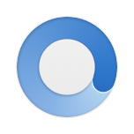

A006 Moke

最近看了一个数据统计，差不多有1/3的应用平均只被用户打开一次之后就会被删除。毫无疑问，随着移动互联网的趋势愈演愈烈，短寿的应用会越来越多，而经得起时间考验的，甚至让用户心甘情愿付费的App会显得极其稀有。
我认为Moke(墨客)就是这样一款APP。如果你受够了微博官方应用大量的广告，冗余的功能，奇怪的交互...你一定想要一款优雅简洁的第三方微博客户端，比如Weico或者Fuubo。而Moke也是一款非常优秀的应用，而且作者也不断的利用新技术和API进行迭代。
尽管微博收回了许多第三方权限（比如关注列表只能部分拉取），Moke仍然有很多可圈可点的地方：顺序阅读模式。官方应用在刷新微博后会自动将阅读位置置顶，这无疑是反人类的——对于有特定收听对象的用户，按照时间流顺序阅读微博明显更友好。屏幕模式自动切换。当屏幕亮度变暗，或者日落的时候，自动切换为暗黑模式。多种浏览器选择。除了应用里作者自己开发的浏览器，还可以选择跳转到系统的Safari，甚至还支持最新的Safari View Controller。
除了以上的功能特性，还有数不清的交互细节和功能细节，比如很多个性化设置和手势设置。Moke在功能强大的基础上仍能保持简洁优雅，我只能说作为一款付费应用，它真的物超所值。
PS：Moke唯一值得吐槽的是：它的图标跟锤子手机的系统浏览器图标太像了...